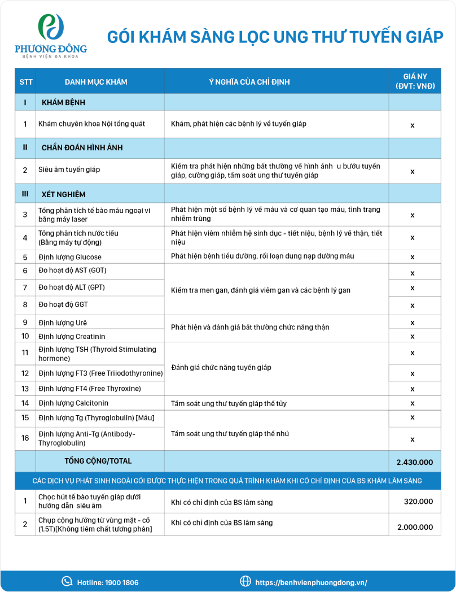

TẦM SOÁT UNG THƯ TUYẾN GIÁP

Phát hiện sớm ung thư giúp điều trị dễ dàng
Tầm soát ung thư tuyến giáp là phương pháp y học hiện đại giúp phát
hiện sớm các tổn thương tiền ung thư. Đây được đánh giá là chìa khóa
để đưa ra phương pháp điều trị sớm và hiệu quả nhất.
Quý khách vui lòng để lại số điện thoại, chúng tôi sẽ liên hệ lại
ngay!
Gói Tầm soát ung thư tuyến giáp là gì?
Tầm soát ung thư tuyến giáp là phương pháp y học hiện đại giúp
phát hiện sớm các tổn thương tiền ung thư. Đây được đánh giá là
chìa khóa để đưa ra phương pháp điều trị sớm nhất, nâng cao hiệu
quả phục hồi, hạn chế các diễn biến xấu dẫn tới tử vong.
Hiện nay xét nghiệm tầm soát ung thư tuyến giáp được nhiều người
quan tâm. Thống kê cho thấy căn bệnh chỉ chiếm từ 1 - 2% trong
toàn bộ các loại ung thư, tuy nhiên nó lại chiếm tới 90% ung thư
các tuyến nội tiết. Đặc biệt, bệnh đứng hàng thứ 9 trong số các
ung thư xảy ra ở nữ giới.
Điều đáng lo ngại hiện nay là bệnh ung thư tuyến giáp vẫn thường
bị bỏ sót. Thậm chí có từ 20 - 60% tổng số bệnh nhân không biết
mình mắc bệnh cho tới khi diễn biến xấu ở giai đoạn cuối. Điều
này là cực kỳ đáng lo ngại bởi nghiên cứu đã chỉ ra rằng bệnh
ung thư tuyến giáp có tỷ lệ chữa khỏi đạt tới 90% nếu như được
khám và phát hiện sớm.
Ai nên khám tầm soát ung thư tuyến giáp?
Nữ giới ở độ tuổi từ 15 - 35 và nam giới trong độ tuổi từ 40 trở
lên, những người có nhu cầu thăm khám bệnh ung thư tuyến giáp.
Đối tượng có tiền sử gia đình có người bị ung thư tuyến giáp,
người mắc hội chứng Cowden, MEN II hoặc FAP.
Những người có chế
độ ăn thiếu i - ốt.
Đối tượng bị phơi
nhiễm phóng xạ ở mức cao.
Người đang mắc các
bệnh liên quan tới tuyến giáp và có thể trạng mệt mỏi, sút cân
nhanh.
Đối tượng xuất hiện
triệu chứng bất thường nghi ngờ ung thư tuyến giáp như: Có khối
u ở vùng tuyến giáp, giọng nói khàn, hạch bạch huyết sưng to,...
Dấu hiệu nhận biết Ung thư tuyến giáp
Ho kéo dài mãi
Một số dấu hiệu ung thư tuyến giáp giai đoạn đầu cần hết sức lưu
ý
Cơ thể mệt mỏi
Một số dấu hiệu ung thư tuyến giáp giai đoạn đầu cần hết sức lưu
ý
Thay đổi giọng nói
Một số dấu hiệu ung thư tuyến giáp giai đoạn đầu cần hết sức lưu
ý
Các tuyến ở cổ bị sưng
Một số dấu hiệu ung thư tuyến giáp giai đoạn đầu cần hết sức lưu
ý
Khó thở, khó nuốt
Một số dấu hiệu ung thư tuyến giáp giai đoạn đầu cần hết sức lưu
ý
Cổ đau phía trước
Một số dấu hiệu ung thư tuyến giáp giai đoạn đầu cần hết sức lưu
ý
Gói tầm soát ung thư tuyến giáp tại BVĐK Phương Đông bao gồm
những gì?

Khám bệnh tổng quát
Khách hàng sẽ được đón tiếp và thăm khám bởi các
chuyên gia, y bác sĩ hàng đầu, giỏi về chuyên môn,
giàu kinh nghiệm. Bác sĩ sẽ khai thác bệnh sử, khám
lâm sàng để phát hiện các nguy cơ ban đầu. Từ đó có
căn cứ để chỉ định thực hiện xét nghiệm và chẩn đoán
bằng hình ảnh. Bác sĩ phụ trách khám tổng quát cũng
chính là người sẽ tiếp nhận kết quả chẩn đoán và đưa
ra kết luận cuối cùng. Tầm soát, sàng lọc ung thư
tuyến giáp là một trong những kỹ thuật khó, không phải
bệnh viện nào cũng có thể thực hiện. Phương pháp đòi
hỏi cơ sở y tế phải có hệ thống máy móc và thiết bị y
tế chuyên biệt cùng đội ngũ y bác sĩ giàu kinh nghiệm.
Khám bệnh chuyên khoa
Khách hàng sẽ được đón tiếp và thăm khám bởi các
chuyên gia, y bác sĩ hàng đầu, giỏi về chuyên môn,
giàu kinh nghiệm. Bác sĩ sẽ khai thác bệnh sử, khám
lâm sàng để phát hiện các nguy cơ ban đầu. Từ đó có
căn cứ để chỉ định thực hiện xét nghiệm và chẩn đoán
bằng hình ảnh. Bác sĩ phụ trách khám tổng quát cũng
chính là người sẽ tiếp nhận kết quả chẩn đoán và đưa
ra kết luận cuối cùng. Tầm soát, sàng lọc ung thư
tuyến giáp là một trong những kỹ thuật khó, không phải
bệnh viện nào cũng có thể thực hiện. Phương pháp đòi
hỏi cơ sở y tế phải có hệ thống máy móc và thiết bị y
tế chuyên biệt cùng đội ngũ y bác sĩ giàu kinh nghiệm.
Chuẩn đoán hình ảnh
Khách hàng sẽ được đón tiếp và thăm khám bởi các
chuyên gia, y bác sĩ hàng đầu, giỏi về chuyên môn,
giàu kinh nghiệm. Bác sĩ sẽ khai thác bệnh sử, khám
lâm sàng để phát hiện các nguy cơ ban đầu. Từ đó có
căn cứ để chỉ định thực hiện xét nghiệm và chẩn đoán
bằng hình ảnh. Bác sĩ phụ trách khám tổng quát cũng
chính là người sẽ tiếp nhận kết quả chẩn đoán và đưa
ra kết luận cuối cùng. Tầm soát, sàng lọc ung thư
tuyến giáp là một trong những kỹ thuật khó, không phải
bệnh viện nào cũng có thể thực hiện. Phương pháp đòi
hỏi cơ sở y tế phải có hệ thống máy móc và thiết bị y
tế chuyên biệt cùng đội ngũ y bác sĩ giàu kinh nghiệm.
Xét nghiệm
Khách hàng sẽ được đón tiếp và thăm khám bởi các
chuyên gia, y bác sĩ hàng đầu, giỏi về chuyên môn,
giàu kinh nghiệm. Bác sĩ sẽ khai thác bệnh sử, khám
lâm sàng để phát hiện các nguy cơ ban đầu. Từ đó có
căn cứ để chỉ định thực hiện xét nghiệm và chẩn đoán
bằng hình ảnh. Bác sĩ phụ trách khám tổng quát cũng
chính là người sẽ tiếp nhận kết quả chẩn đoán và đưa
ra kết luận cuối cùng. Tầm soát, sàng lọc ung thư
tuyến giáp là một trong những kỹ thuật khó, không phải
bệnh viện nào cũng có thể thực hiện. Phương pháp đòi
hỏi cơ sở y tế phải có hệ thống máy móc và thiết bị y
tế chuyên biệt cùng đội ngũ y bác sĩ giàu kinh nghiệm.
Gói Tầm soát ung thư tuyến giáp là gì?
Với những trường hợp nghi ngờ ung thư tuyến giáp, bác sĩ có thể
chỉ định người bệnh thực hiện thêm các xét nghiệm như chọc hút
tế bào tuyến giáp.
Với những trường hợp nghi ngờ ung thư tuyến giáp, bác sĩ có thể
chỉ định người bệnh thực hiện thêm các xét nghiệm như chọc hút
tế bào tuyến giáp.
Với những trường hợp nghi ngờ ung thư tuyến giáp, bác sĩ có thể
chỉ định người bệnh thực hiện thêm các xét nghiệm như chọc hút
tế bào tuyến giáp.
Với những trường hợp nghi ngờ ung thư tuyến giáp, bác sĩ có thể
chỉ định người bệnh thực hiện thêm các xét nghiệm như chọc hút
tế bào tuyến giáp.
Các gói dịch vụ liên quan

Gói Khám sàng lọc ung thư tiền liệt tuyến
Ung thư tiền liệt tuyến rất nguy hiểm, đe dọa nặng nề đến
sức khỏe nam giới. Vì vậy các bác sĩ luôn khuyến nghị người
thuộc đối tượng có nguy cơ cao mắc căn bệnh này nên khám
sàng lọc định kỳ để có thể phát hiện sớm, chính xác, giúp
điều trị hiệu quả.
Đăng ký tư vấn ngay >>
Lợi ích khi sử dụng dịch vụ Tầm soát ung thư tuyến giáp
Bệnh viện có khuôn
viên khang trang, hiện đại và trong lành với hệ thống cây xanh
rộng khắp, rất lý tưởng trong việc điều trị và hồi phục của
người bệnh.
Bệnh viện có khuôn
viên khang trang, hiện đại và trong lành với hệ thống cây xanh
rộng khắp, rất lý tưởng trong việc điều trị và hồi phục của
người bệnh.
Bệnh viện có khuôn
viên khang trang, hiện đại và trong lành với hệ thống cây xanh
rộng khắp, rất lý tưởng trong việc điều trị và hồi phục của
người bệnh.
Bệnh viện có khuôn
viên khang trang, hiện đại và trong lành với hệ thống cây xanh
rộng khắp, rất lý tưởng trong việc điều trị và hồi phục của
người bệnh.
Bệnh viện có khuôn
viên khang trang, hiện đại và trong lành với hệ thống cây xanh
rộng khắp, rất lý tưởng trong việc điều trị và hồi phục của
người bệnh.
Bệnh viện có khuôn
viên khang trang, hiện đại và trong lành với hệ thống cây xanh
rộng khắp, rất lý tưởng trong việc điều trị và hồi phục của
người bệnh.
Đội ngũ bác sĩ của chúng tôi
Cảm nhận của khách hàng sau khi sử dụng dịch vụ Tầm soát ung thư
tuyến giáp


BỆNH VIỆN ĐA KHOA PHƯƠNG ĐÔNG
Địa chỉ: Số 9, Phố Viên, P. Cổ Nhuế 2, Q. Bắc Từ Liêm, HN
Email: bvphuongdong@phuongdonghospital.vn
Hotline: 1900 1806
Thời gian mở cửa
Thứ 2 - Chủ nhật : 07:30 -19:00
Cấp cứu 24/7: 0833 015 115
Liên hệ
Hotline Tiêm chủng: 0911 615 115
Hotline Khoa sản : 0911 615 115
Mạng xã hội